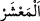

132. Herkesin yaptıkları işlere göre dereceleri vardır. Rabbin onların
yaptıklarından habersiz değildir.
133. Rabbin zengindir, rahmet sahibidir. Dilerse sizi yok eder ve sizi başka bir
kavmin zürriyetinden yarattığı gibi sizden sonra yerinize dilediği bir kavmi yaratır.
134. Size vadedilen mutlaka gelecektir; siz bunu önleyemezsiniz.
135. De ki: Ey kavmim! Elinizden geleni yapın! Ben de yapacağım! Yurdun
(dünyanın) sonunun kimin lehine olduğunu yakında bileceksiniz. Gerçek şu ki,
zalimler iflah olmazlar.
Ey Muhammed (s.a.) sen, Mekkelilere ve diğerlerine hatırlat ki Allah “hepsini”
insanları ve cinleri “bir araya” yani kıyamet durağında “topladığı gün” azarlayarak
şöyle buyuracaktır: “Ey cinler topluluğu,” yani ey şeytanlar cemaati.
Buradaki (
), cemaat demektir. Çünkü cemaat onları belli bir yerde tutar ve
aralarında muaşeret meydana gelir.
Bazıları derler ki: cemaate (el-ma‘şer) denilmesi çokluğun son haddine ulaşmış
olmaları sebebiyledir. “el-Aşera” yani on, sayı olarak çokluğun tam ve mükemmel bir
ifadesidir. Çünkü on sayısından sonraki sayıların hepsi, birler basamağı dikkate
alınmazsa “on”un terkîbinden meydana gelir. Bu takdirde bir topluluğa “ma’şer”
denildiği vakit sanki bununla kâmil manada çokluğu ifade eden “on”un mahalli
kastedilmektedir.
Cinlere “cin” denilmesi, insanların gözlerine görünmedikleri içindir.
“Siz insanlarla” onları aldatmak ve dalalete düşürmek için “çok uğraştınız.” Bir
çok insanları doğru yoldan saptırdınız. “buyurur.”
“Onların insanlardan olan dostları” yani şeytanlara itâat eden şeytanların dostları
“derler ki: “Rabb’imiz, biz birbirimizden yararlandık” Bazı cinler insanlardan, bazı
insanlar da cinlerden faydalandı.
İnsanların cinlerden faydalanması, cinlerin onları bazı ihtiraslarına ulaştırmalarıdır.
Bu da ihtiraslara ulaşma yollarını kolaylaştırmak konusunda rehberlik etmeleri şeklinde
olur.
Cinlerin insanlardan faydalanmaları ise insanların onlara itâat etmesi ve gayretlerini
boşa çıkarmaması sûreti ile olur. Kendisine itâat edilen bir reis, teb’asının kendisine
boyun eğmesinden faydalanır.
“Ve bize verdiğin sürenin sonuna ulaştık.” Yani biz senin tayin etmiş olduğun
kıyamet gününün vaktine ulaştık.
Onlar bu sözü, şeytanlara itâat ettiklerini, hevâya tâbi olduklarını ve yeniden dirilmeyi
inkar ettiklerini îtiraf etmek için; bundan dolayı duydukları pişmanlığı ve kendi
durumlarına duydukları tahassürü ortaya koymak ve Rab’lerine teslimiyetlerini
arzetmek için söylerler.